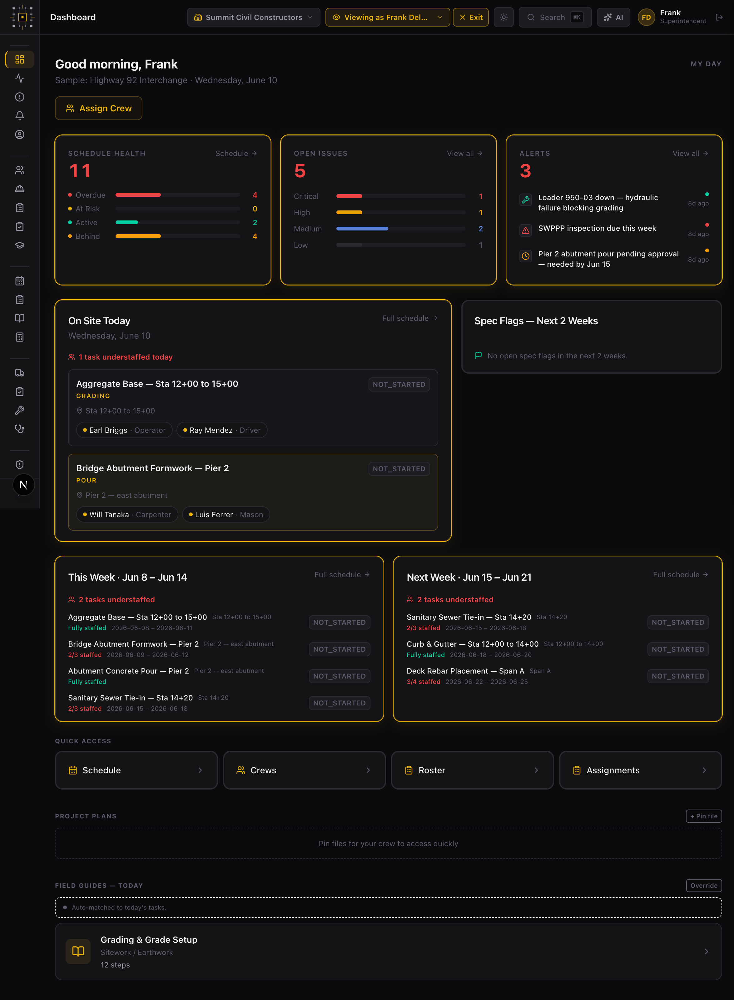
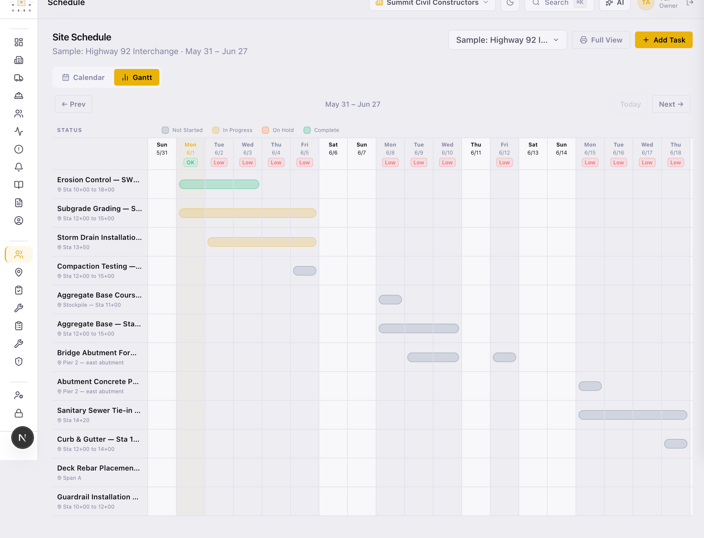
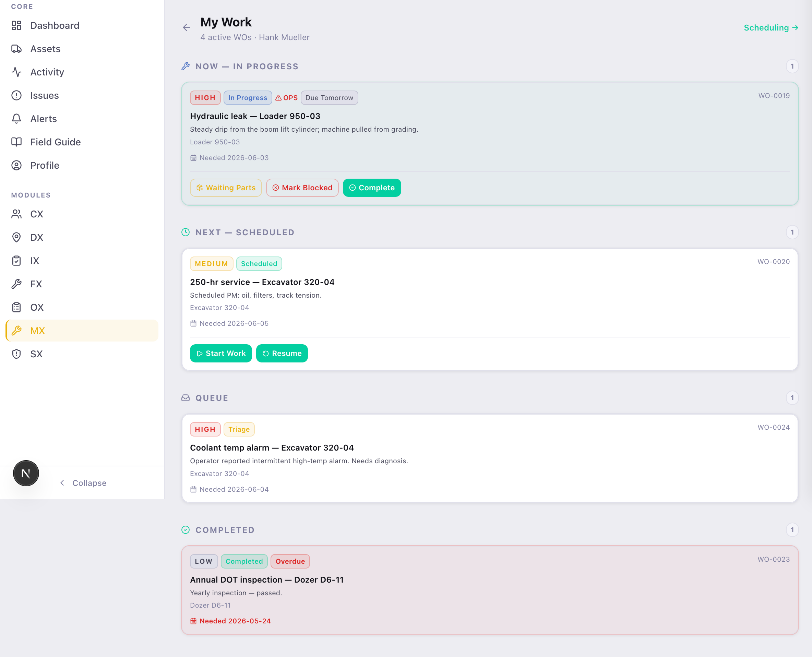
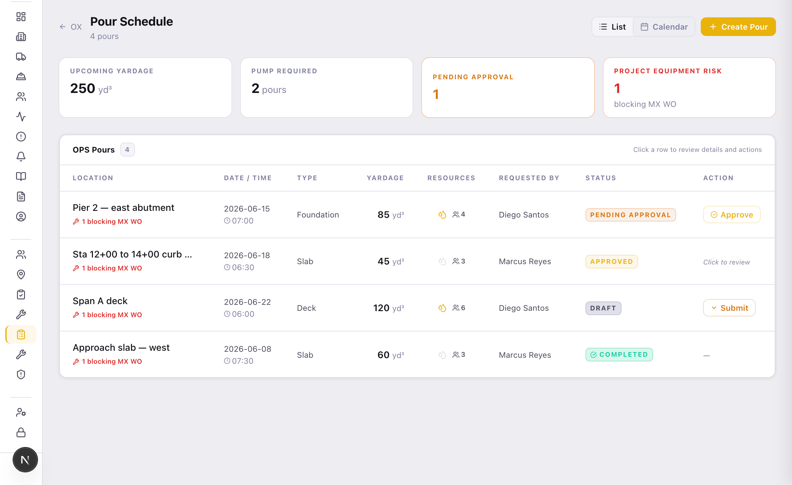
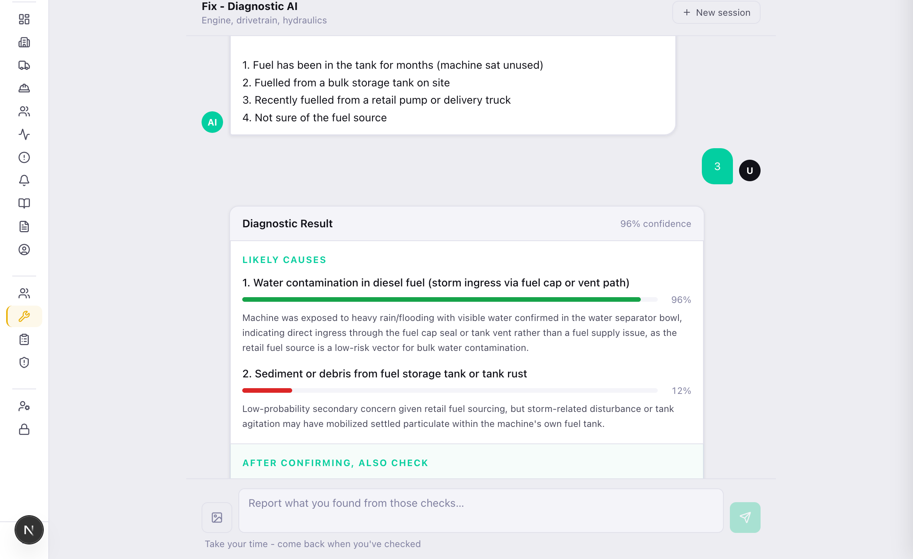
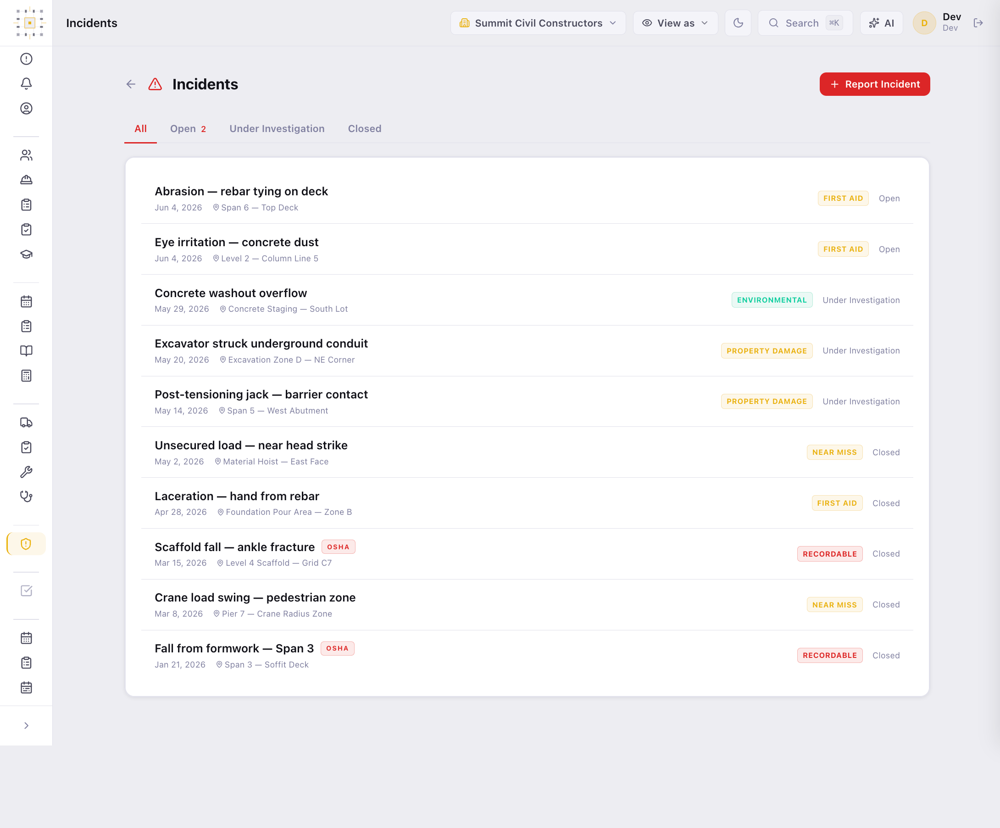
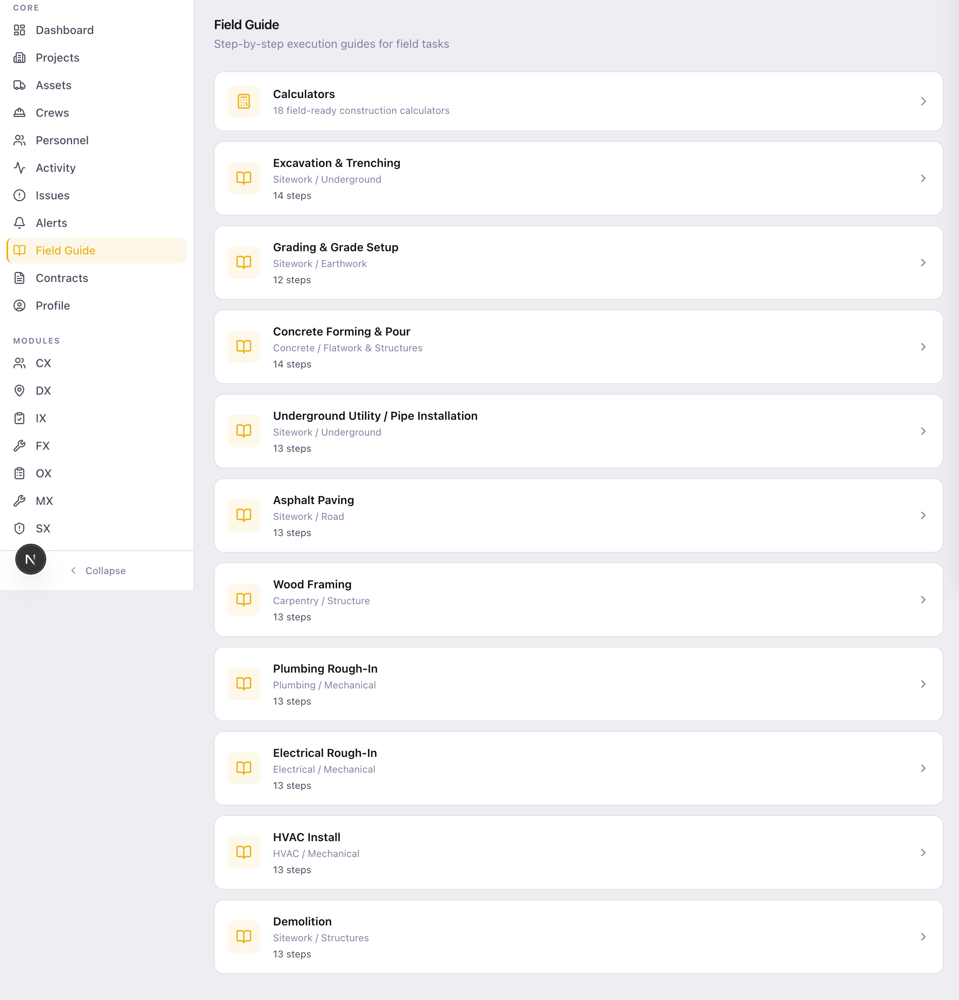

BedrockOS runs scheduling, maintenance, safety, and operations from a single role-aware system. Built by people who've run the jobs — and run on a live $500M project today.

Scheduling in one app. Maintenance on a whiteboard. Pours in a group text. Inspections on paper. The information that should connect them lives in people's heads — and walks off the job when they do.
Everything is scoped to the project you're in and the role you hold. One company, many projects, one coherent system.
Unlock what your org needs — each module is built to work alone and together.
Roster the whole workforce, build named crews, and assign people across projects week by week. Run a four-week site calendar and a scrollable Gantt — and bulk-import tasks straight from a CSV.

Mechanics work a personal "My Work" queue. Shop leads triage and assign work orders. And equipment readiness doesn't sit in a silo — it feeds straight into pour planning downstream.

Dispatch field requests — masons, pump trucks, equipment — and coordinate company-wide concrete pours across list, calendar, and approval views. The request pulls live crew availability from Field Management and spins up Maintenance work orders where it needs to.

AI Mechanic is an AI diagnostic built for operators. Describe what the machine is doing — the noise, the warning light, the way it's running — and it works toward the likely cause. Plenty of issues turn out to be a quick fix the operator can handle on the spot. When it isn't, one tap escalates to the shop and opens a Maintenance work order with the diagnosis already attached.

A full safety system — incident reporting, hazard and near-miss capture, corrective actions, and certification tracking with expiry validation. OSHA 300/301 records generate from your data with an audit trail, ready when the inspector arrives.

This is the part nobody else has. The handoffs that normally happen over text, radio, and memory happen in the system — automatically.
"Single OS, not point tools" is usually marketing. Here it's true in the code — these handoffs run in production on a live job today.
Beneath the modules sits the shared shell — the coordination surface every role touches, scoped to the project they're in.

Same system, scoped to the role. A PM sees contracts and the whole project; a foreman sees today's crew and tasks; a mechanic sees their work queue. Access is built in — not bolted on after.
I'm a civil superintendent with 20 years in the field, currently running a $500M+ infrastructure job. BedrockOS started because I couldn't coordinate the work with what existed. Every module is something I needed on a Tuesday — so we built it and ran it on the job.
BedrockOS is available to license now. Tell us about your operation and we'll walk you through the system that's running ours.